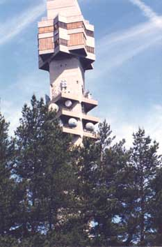
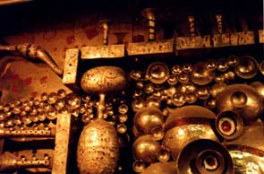
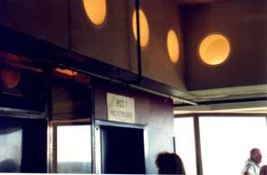
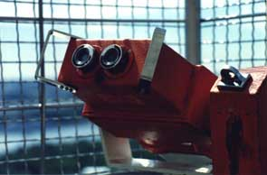
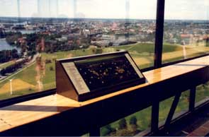

Kaknästornet Kaknästornet

The importance of the Kaknäs Tower is evident even for the accidental visitor. The bus ride takes him through flashy Östermalm and the whole embassy area, where vast stretches of space open up on the left hand side, containing only one object - the Tower. This area is called "The Eco-Park" and it was chosen as the ideal place for the Tower, according to ancient Swedish divination principles; a cross between rune magic and Bismarckian welfare calculus.
It can hardly be an accident that the Tower peeks over the perimeter forest only 100 meters from the embassy of the People's Republic of China. Keeping in mind the political atmosphere of 1967, when the Tower was opened, it must have been only too convenient to give a couple of Red Guards from the embassy an all-year pass so that they could monitor the activities in the capital. It was believed that Sweden could learn much from China; many children's books about hardworking farmhands were translated and the Swedish educational system was actually heavily inspired by the Chinese system of "unauthoritarian education" practiced during the cultural revolution.

The walls of the lobby are boiling with chaotic alien forms, which can sustain the visitor's interest quite some time, while listening to the clerks chattering in a bizarre form of pidgin Finnish, about 20 words gleaned from some phrase book, to the desperate Finnish tourist groups who try to explain that they only want to buy two Cokes from the pathetic gift shop which spoils the majestic interior. The aliens are part of an ambitious art installment called Spelrum Futurum (suggesting a space for creative play in the future tense) by artist Walter Bengtsson, who explains in an accompanying folder: "The basic idea is man in the technological world, where sending and receiving are in progress. (...) the figures have some kind of arms or tentacles that grasp and grope. I was thinking of the Russian astronaut who died in space. You can never trust the technical aids. (...) The TV-tower is actually a kind of symbol of our time with its enormous machinery, cables, etc. Nowadays, as we know, we do not build cathedrals, but it can be said that this is a cathedral of our time."

Bang on target. The Tower is a cathedral, a manifestation of early Swedish info-society dreams. It is the hub of most of Sweden's radio and TV broadcasting, a spider in its info-web. The concrete surface of the Tower is inscribed with monotonous patterns, symbolizing the signals sent to and from Kaknäs. The Tower contains Teracom's operative centre, which connects and controls all programs on the Swedish surface net. There are five satellite dishes, connecting radio and TV signals to and from satellites. And right below the dishes, the bed-rock accomodates the vast hall of Skyport Kaknäs, untiringly transmitting and receiving information.

The natural climax of a trip to Kaknäs is to take the lift up to the very top, at about 155 meters over the ground. The lift is somewhat slow, 12 mph, so there is enough time to take a couple of deep breaths and mentally reconnect with the glory days of the Tower. Once at the top, it is advisable to skip the Scandinavian restaurant and go straight for the view. From here, the whole city of Stockholm is at your mercy. There are four sets of powerful binoculars (one of which works), and with these, no intimate tete-a-tetes from Östermalm's opulent apartments are safe from your eyes. You could also get your kicks by stalking the workers below, zooming in on their lunch boxes when they take a break from unloading crates of black market cigarrettes in the bay. There is also a remote control which would seem to give you the ability to puppet Stockholm City according to your whim.
-Mikael Huss